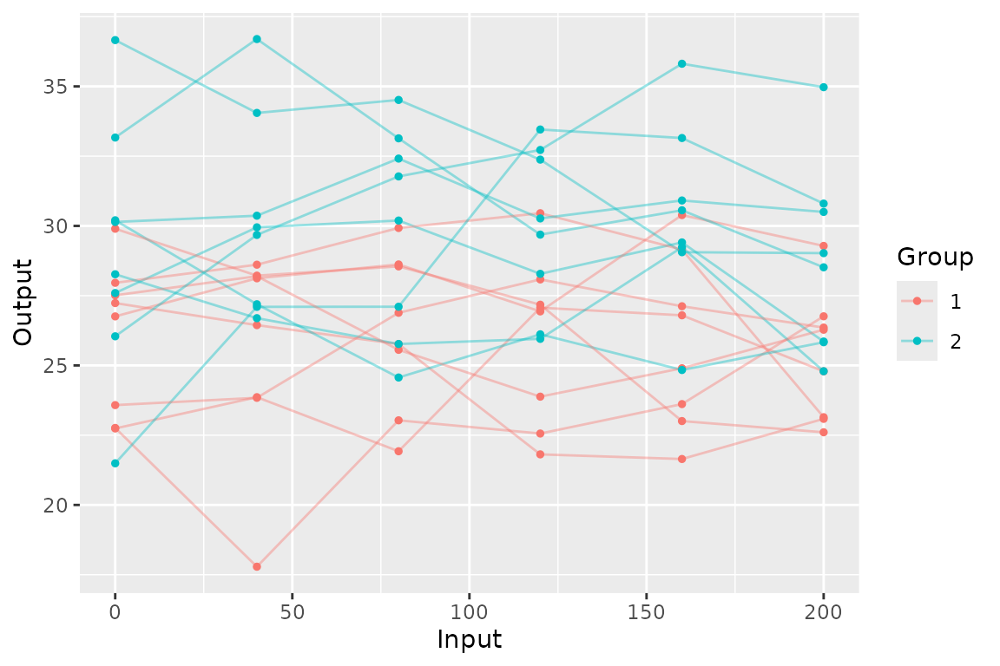
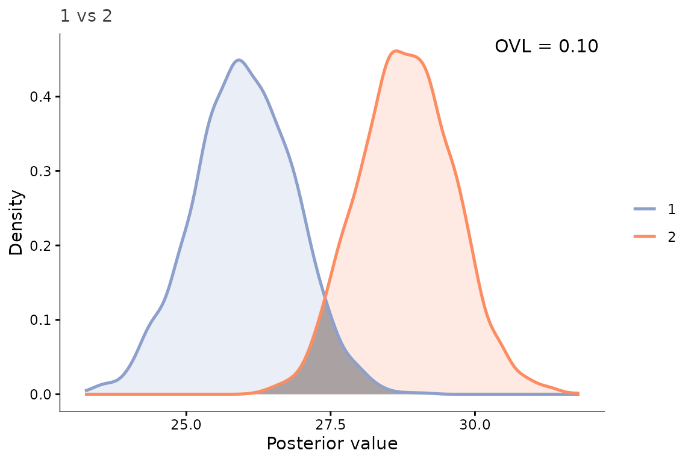
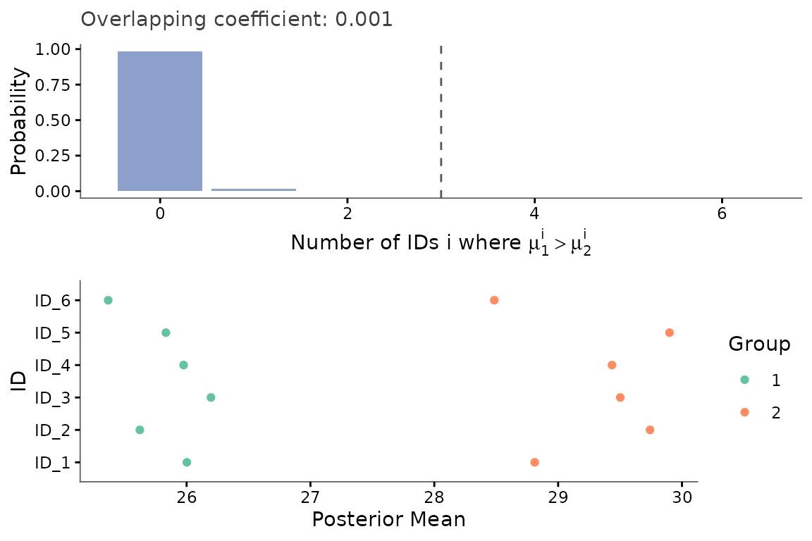

Basic pipeline: comparing two groups with a spatial kernel
Source:vignettes/01_basic_pipeline.Rmd
01_basic_pipeline.Rmd
library(keRnel)
library(BayesOmics)
library(ggplot2)You have two groups, one covariate (Input), for instance
time, per feature, and want to know whether – and where – the groups
differ. This is the shortest path through the full pipeline: simulate,
fit, compare, visualize.
Simulate
set.seed(1)
kern_true <- variance_kernel(variance = 10) * se_kernel(length_scale = 100)
data <- simu_db_kernel(
kernel = kern_true,
nb_id = 6,
nb_group = 2,
nb_sample = 8,
diff_group = 3,
var_sample = 3,
range_input = c(0, 200),
integer_input = TRUE,
input_grid = TRUE
)
head(data)
#> ID Group Sample Input_ID Input Output
#> 1 ID_1 1 1 1 0 22.74129
#> 2 ID_2 1 1 1 40 23.86233
#> 3 ID_3 1 1 1 80 21.92447
#> 4 ID_4 1 1 1 120 27.06826
#> 5 ID_5 1 1 1 160 26.79674
#> 6 ID_6 1 1 1 200 24.78897
ggplot(data, aes(Input, Output, color = Group, group = interaction(Group, Sample))) +
geom_line(alpha = 0.4) +
geom_point(size = 1)
Each line is one replicate; the two groups’ vertical offset is the differential signal the rest of this example tries to recover and quantify.
Fit the kernel
A Squared Exponential (SE) term captures spatial correlation; a white-noise term absorbs measurement noise and keeps the resulting covariance well-conditioned (see the kernel-choice article for other kernels and why the noise term matters):
kern <- variance_kernel(variance = 1) * se_kernel(length_scale = 50) +
white_noise_kernel(noise = 1)
group1 <- data[data$Group == unique(data$Group)[1], ]
prior_mean <- mean(group1$Output)
hp_opt <- fit_kernel(kern, group1, prior_mean = prior_mean, prior_cov = 1)
kern_opt <- kupdate(kern,
variance = hp_opt[["variance"]],
length_scale = hp_opt[["length_scale"]],
noise = hp_opt[["noise"]])Compute posteriors and compare
posterior <- posterior_mean(data, kern_opt, mu_0 = prior_mean, lambda_0 = 1)
group_diff(posterior)
#> Metric: ovl_metric(n_mc = 2000)
#>
#> 1 2
#> 1 1.000000000 0.001360574
#> 2 0.001360574 1.000000000The Overlapping Coefficient (OVL) ranges from 1 (identical posteriors, no differential signal) to 0 (fully separated, strong differential signal).
Visualize one feature
samples <- sample_posterior(posterior, n = 2000)
plot_posterior_overlap(samples,
group1 = unique(samples$Group)[1],
group2 = unique(samples$Group)[2],
id = unique(samples$ID)[1])
The shaded region is exactly what the OVL number above quantifies for that feature.
How many features differ?
The single-feature view above does not say whether the difference is
localized or spread across the whole region.
compute_multi_diff() answers that from the posterior draws:
the empirical probability that group 1 exceeds group 2 on k
out of the 6 features, plotted by plot_multi_diff()
alongside every feature’s posterior mean:
multi_diff <- compute_multi_diff(samples, results = posterior)
plot_multi_diff(multi_diff)
The bar chart is concentrated almost entirely at k = 0
(over 98% of the probability mass), not spread uniformly across
0-6: on almost every feature, group 2’s draw
exceeds group 1’s. This is what a clear, consistent differential signal
looks like – not just a low joint OVL, but the same direction of effect
on nearly every feature.
Takeaways
- The pipeline is always four calls:
fit_kernel()->posterior_mean()->group_diff()-> a plot function. - This example fixes every other variable: two groups, one covariate, a kernel shared across groups. Each is relaxed in a separate article.